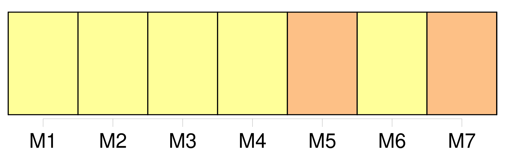
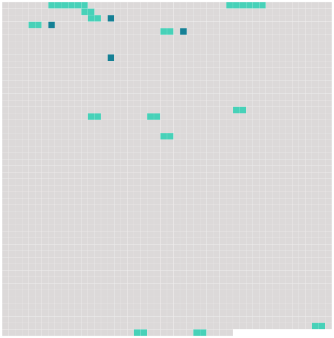

Longueur nb maillons : 17 mentions |
 |
Article 19
Cependant, le transporteur n'est pas responsable [du dommage causé par un retard] s'il prouve que lui, ses préposés et mandataires ont pris toutes les mesures qui pouvaient raisonnablement s'imposer pour éviter [le dommage] , ou qu'il leur était impossible de les prendre.
Article 20 Lorsqu'une demande en réparation est introduite par une personne autre que le passager, en raison de la mort ou d'une lésion subie par ce dernier, le transporteur est également exonéré en tout ou en partie de sa responsabilité dans la mesure où il prouve que la négligence ou un autre acte ou omission préjudiciable de ce passager a causé [le dommage] ou [y] a contribué. [6 phrases]
En cas de [dommage] subi par des passagers résultant d'un retard, aux termes de l'article 19, la responsabilité du transporteur est limitée à la somme de 4150 droits de tirage spéciaux par passager. [10 phrases]
Les dispositions des paragraphes 1 et 2 du présent article ne s'appliquent pas s'il est prouvé que [le dommage] résulte d'un acte ou d'une omission du transporteur, de ses préposés ou de ses mandataires, fait soit avec l'intention de provoquer [un dommage] , soit témérairement et avec conscience qu' [un dommage] en résultera probablement, pour autant que, dans le cas d'un acte ou d'une omission de préposés ou de mandataires, la preuve soit également apportée que ceux -ci ont agi dans l'exercice de leurs fonctions. [2 phrases]
La disposition précédente ne s'applique pas lorsque le montant de l'indemnité allouée, non compris les dépens et autres frais de procès, ne dépasse pas la somme que le transporteur a offerte par écrit au demandeur dans un délai de six mois à dater du fait qui a causé [le dommage] ou avant l'introduction de l'instance si celle -ci est postérieure à ce délai. [36 phrases]
Sauf pour le transport de marchandises, les dispositions des paragraphes 1 et 2 du présent article ne s'appliquent pas s'il est prouvé que [le dommage] résulte d'un acte ou d'une omission du préposé ou du mandataire, fait soit avec l'intention de provoquer [un dommage] , soit témérairement et avec conscience qu' [un dommage] en résultera probablement. |
 |
Il est possible de télécharger la ressource sur la page Ortolang |
Si vous avez des questions ou vous voyez des erreurs, merci d'envoyer un mail à silvia.federzoni89@gmail.com |